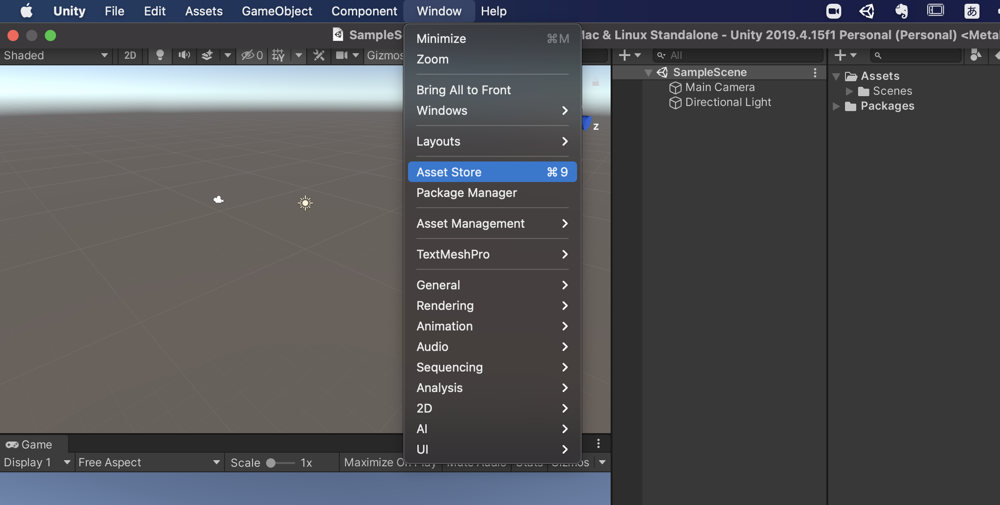
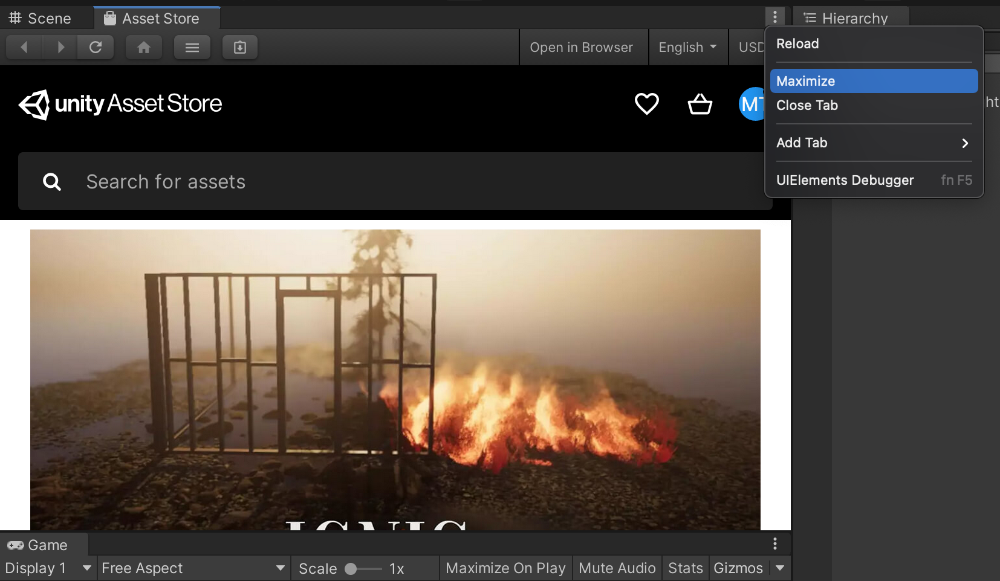
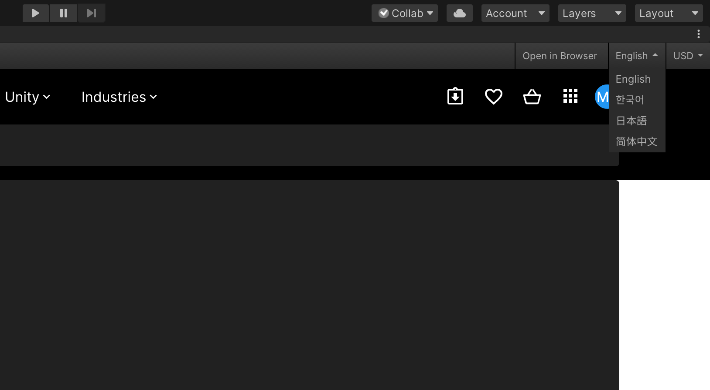
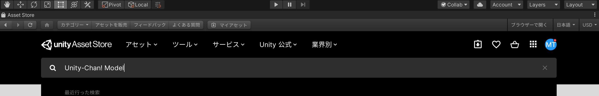
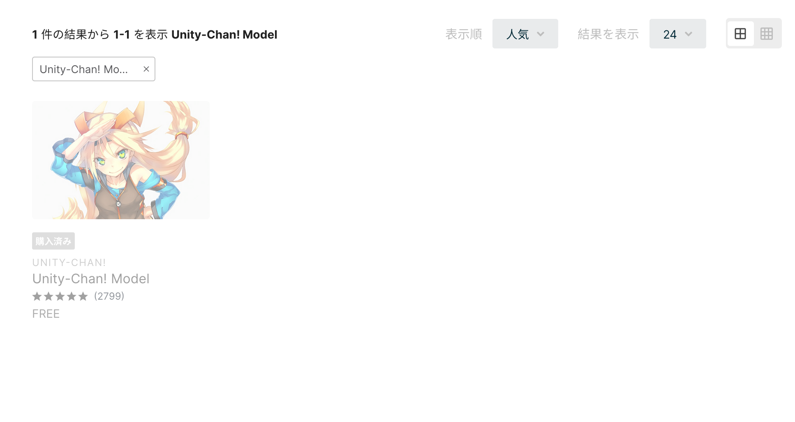
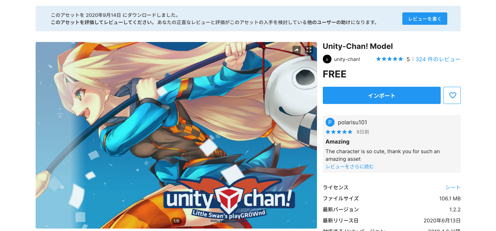
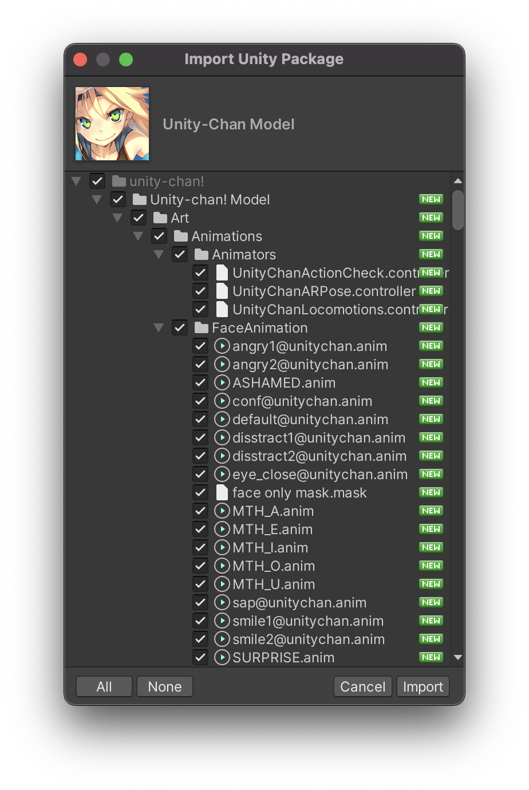
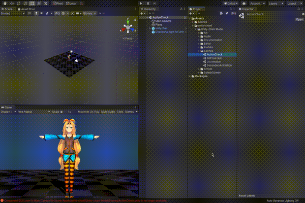
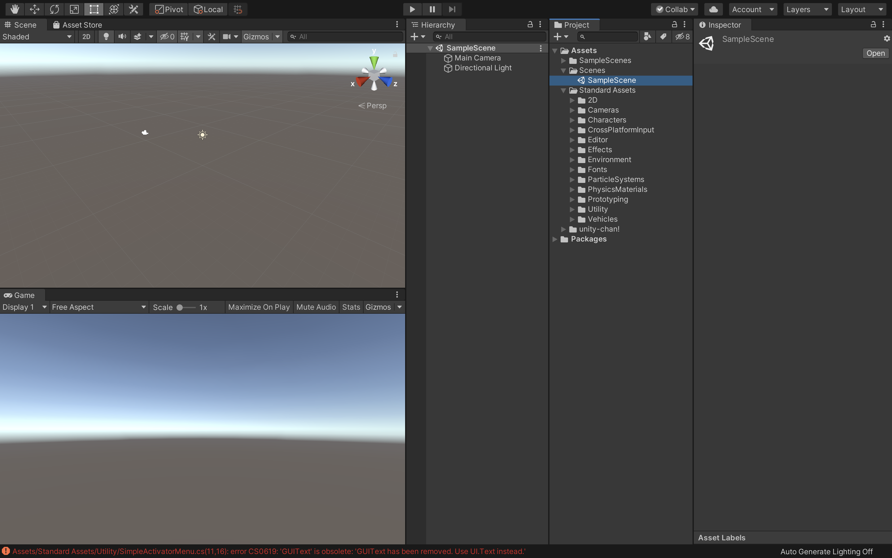

3人称視点ゲームの作成
新規プロジェクトの作成
まずは新規プロジェクトを作成します。

UnityHubを開き、右上の新規作成ボタンを押してください。
テンプレートは3Dのままで、プロジェクト名はなんでも構いません。ここでは「CharacterGame」としておきます。 保存先を決めたら作成ボタンを押します。

Unityが開けたらUnityエディタのレイアウトを任意の形にしてください。 Unityエディタの右上の「Layout」から好きなレイアウトを設定できます。 こちらの教材では「2 × 3」を利用します。
アセットストアからインポート
Unityちゃんのインポート
プロジェクト作成が終わったら早速アセットストアから3D素材をインポートします。

UnityのWindowタブからAssetStoreを選択します。 そうすると、このようにSceneウィンドウの場所にAssetStoreが表示されます。

このままでは少しウィンドウが小さいので、AssetStoreタブの点線アイコンから「Maximize」を選択します。

次にこちらの言語タブから日本語を選択してください。 これで日本語表記でアセットストアを表示できます。
今回はUnityJapanから公式に出されている「Unity-Chan! Model」と、Unityでゲームを作成するときに便利なアセットが入っている「Standard Assets」をインポートします。

まずはUnityちゃんをインポートします。 AssetStoreの検索バーに「Unity-Chan! Model」と記述し、検索してください。

そうすると、このようにUnityちゃんのアセットが表示されますので、こちらを選択してください。

既に別のプロジェクト等でインストールしたことのある場合はこのように「インポート」のボタンが表示されますが、初めてこのアセットをインポートする場合はこちらのボタンは「ダウンロード」になっています。
まだダウンロードしていない場合は、こちらのボタンからダウンロードを実行してください。 しばらく待っているとダウンロードが完了し、こちらのボタンが画像のようにインポートに変わります。
次にこの「インポート」ボタンをクリックします。

そうすると、このようなウィンドウが表示されますので、全てにチェックが入っているのを確認してから右下の「Import」ボタンをクリックします。

インポートが完了したらアセットストアの全画面表示を終了させてUnityエディタを開きましょう。
このようにProjectウィンドウに「unity-chan」が表示されていれば成功です。
まずはこの3DキャラクターがきちんとUnityで動作できるか確認しましょう。

プロジェクトウィンドウで「unity-chan! -> Unity-chan! Model -> Scenes -> ActionCheck」をダブルクリックで開きましょう。 そしてUnityエディタの上の方にある実行ボタンを押してください。 そして、ゲームビューで3Dキャラクターが動き出せば成功です。
また、ゲームビューに表示されているChangeMotionのNextボタンをクリックすると、画像のように次々とアニメーションが切り替わるかと思います。

動作確認ができたので元のシーン「Assets -> Scenes -> SampleScene」を開き直しておきましょう。
スタンダードアセットのインポート
次にスタンダードアセットをダウンロードします。

先ほどと同じ要領でAssetStoreで「Standard Assets」を検索し、インポートしてください。

このようにプロジェクトウィンドウにStandartAssetsのフォルダが表示されていればOKです。